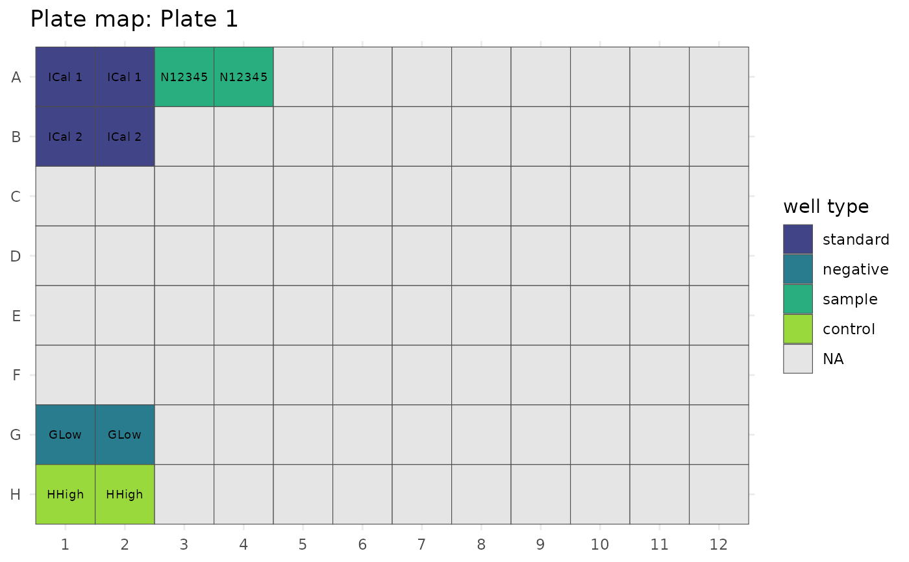

![[Experimental]](figures/lifecycle-experimental.svg)
Usage
read_qview(
path,
strip_prefix = FALSE,
verbose = TRUE,
call = rlang::caller_env()
)Arguments
- path
Character. Path to the
.Q-Viewfile.- strip_prefix
Logical. If
TRUE, reverse Q-View's internal naming convention viastrip_qview_prefix()so identifiers match the original well-assignment template. DefaultFALSE.- verbose
Logical. Print a short summary after parsing. Default
TRUE.- call
The execution environment of the calling function. Used for error reporting; experts only.
Value
A list with class "qview" containing:
metadataNamed list:
project,plate,image,imager,product,user,report_created,qview_version,template,container_version,file_path,parsed_at.manifestTibble with one row per declared file entry (
name,size_bytes,parent).segmentsTibble of H2 segment byte ranges (
segment,start,end,size).analytesTibble:
spot_number,analyte,unit, pluslod,lloq,uloq,assay_control_low,assay_control_highwhen reported.well_groupsTibble:
well_group,sample_id,is_standard,is_negative,is_sample,is_control,well_type.pixel_intensitiesLong-format tibble of replicate readings:
well_group,sample_id,well,replicate,analyte,unit,pixel_intensity,dilution.summary_statisticsLong-format tibble of per-group averages, std-dev, and CV statistics:
well_group,sample_id,statistic,analyte,value,unit.concentrationsLong-format concentration tibble or
NULLif the regression model is"Qualitative".curve_fitTibble with
analyte,regression_model, orNULLif not reported.report_csvCharacter vector of the raw CSV report lines, or
NULLif no report was generated.plate_layoutTibble with one row per well:
well,plate_row,plate_col,well_group,sample_id,well_type,dilution.
Details
Parses a .Q-View binary container (a chemiluminescent multiplex
ELISA project file holding an embedded H2 database plus binary LOB
segments) and extracts the assay data: project metadata, analyte
panel with units, well-group sample assignments, per-well replicate
pixel intensities, summary statistics, and (when present) the
embedded CSV report.
The file format is reverse-engineered from public binary inspection: it begins with a plain-text manifest, followed by three concatenated H2 database segments. The fully-formatted report Q-View renders for the user is stored as a CLOB inside the main H2 segment. This parser scans the binary for that CLOB, reassembles it across H2 page boundaries (2048-byte pages), and parses it as CSV.
Parsing is done in pure R: no Java runtime, no H2 database driver, no system dependencies beyond a working R installation.
See also
strip_qview_prefix(), read_qview_template(),
print.qview(), plot.qview().
Other qview-reader:
read_qview_report(),
read_qview_template()
Examples
# A small synthetic .Q-View ships with the package:
path <- system.file("extdata", "example.Q-View", package = "qviewparsR")
qv <- read_qview(path)
#> ✔ Parsed example.Q-View: 5 well groups x 3 analytes (20 replicate rows).
#> ℹ Q-View Version: "3.13"
qv
#>
#> ── Q-View project: "Example ELISA project" ─────────────────────────────────────
#> • Plate: "Plate 1"
#> • Image: "example-plate (01 Jan 2024 12:00)"
#> • Imager: "#000000 (00000)"
#> • Product: "EXAMPLE-LOT"
#> • Software: v"3.13"
#> • Template: "example-template"
#> • Created: "01 Jan 2024 12:05"
#>
#> ── Analytes (3) ──
#>
#> Ba (ng/ml), Bb (ug/ml), Ref Spot (N/A)
#>
#> ── Well groups (5) ──
#>
#> • standard: 2
#> • negative: 1
#> • control: 1
#> • sample: 1
#>
#> ── Data ──
#>
#> • replicate rows: 20
#> • summary stat rows: 0
#> • concentrations: 4 rows
#> • curve fit: 3 analytes
qv$analytes
#> # A tibble: 3 × 8
#> spot_number analyte unit lod lloq uloq assay_control_low
#> <int> <chr> <chr> <dbl> <dbl> <dbl> <dbl>
#> 1 1 Ba ng/ml 0.065 0.26 18.9 NA
#> 2 2 Bb ug/ml 0.00051 0.0029 0.2 NA
#> 3 3 Ref Spot N/A NA NA NA 5000
#> # ℹ 1 more variable: assay_control_high <dbl>
head(qv$pixel_intensities)
#> # A tibble: 6 × 8
#> well_group sample_id well replicate analyte unit pixel_intensity dilution
#> <chr> <chr> <chr> <int> <chr> <chr> <dbl> <dbl>
#> 1 ICal 1 ICal 1 A1 1 Ba ng/ml 8671 NA
#> 2 ICal 1 ICal 1 A1 1 Bb ug/ml 19982 NA
#> 3 ICal 1 ICal 1 A2 2 Ba ng/ml 17838 NA
#> 4 ICal 1 ICal 1 A2 2 Bb ug/ml 23848 NA
#> 5 N12345 N12345 A3 1 Ba ng/ml 1200 NA
#> 6 N12345 N12345 A3 1 Bb ug/ml 1300 NA
if (requireNamespace("ggplot2", quietly = TRUE)) {
plot(qv, type = "plate_map")
}
